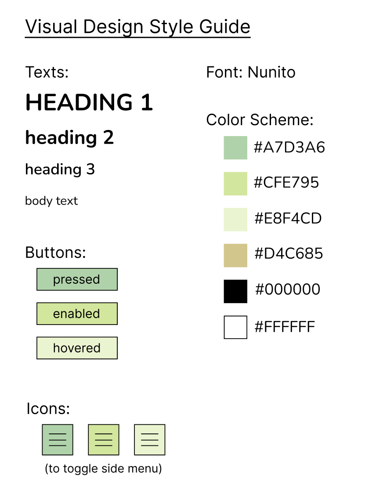

Responsive Redesign
Creating a responsive website for a local mini golf and dairy farm business in the Philadelphia area.
Overview
In this project, I took a business's website (Freddy Hill Farms) and
indentified its key accessibility & efficiency, learnability,
and memorability issues. Then, working to fix these problems,
I redesigned the website to address these points.
The end goal of the business's website focuses
on its desired metric: sales and customers.
Previous Website
 Link to original Freddy hill website
Link to original Freddy hill website
The Freddy Hill Farms website contains information on their dairy store (milk, ice cream, and ice cream cakes)
and their fun center (which includes 2 mini golf courses,
a driving range, batting cages, golf lessons, a golf shop, and golf camps).
I chose this website to improve because there are some
unclear buttons on the website and redundant links that
could be cleared up to streamline the learnability and
improve the efficiency.
More specifically, the following listed are the identified problems
with the website that could use improvement:
Learnability
- The two images on the home page under the text “Fun Center” & “Dairy Store”
don't afford clicking, but they are actually links showing no indication they are.
- Some text links barely change color when the mouse is hovered over
and the text and background color contrast is very low, making it difficult
to see components on the website.
Memorability
-
Finding certain items like “Photos” and "Gift Cards" are not very easy to locate as they are under the “About” navigation tab,
which is not intuitive and makes little sense.
Efficiency
- There are so many redundant links, which make it difficult for the
user to quickly understand where to go for what they're looking for.
Examples:
- Everything in the quick links section can be found in the navigation bar (mini golf tab in the navigation bar, the mini golf link
in the black section, and the mini golf link in the quick links section are all the same)
- Fun center image links to the same place as the fun center tab in the navigation bar
- Dairy store image links to the same place as the dairy store tab in the navigation bar
- The home page contains no pertinent information for users to quickly find
and instead just links to pages elsewhere.
- The first thing the user's eye is drawn to isn't the name of the
establishment, but instead the Fun Center & Dairy Store images
(it would be more efficient to have the user's eye first go to
information on the overview of the website or name of the establishment).
- The Recent Posts section links to a Blog part of the website that is inaccessible otherwise and that many users may miss
(the blog only seems to be for temporary announcements like selling of a new item or delayed openings).
Accessibility
- The WAVE tool flagged missing alternative text for many images and
flagged very low contrast for most of the text on the website.
- There were a few alerts on structural elements, such as redundant
links and missing headings.
I agree with the problems detected and many were problems related to what
I had noticed and listed above (low contrast on links from learnability & redundant links from efficiency).
In terms of missing headings, this results in a loss of efficiency
where the user cannot easily discern the name of the establishment
or title of the webpage, also noted above. It creates less organization
and takes longer for users to find what they are looking for on the site.
Process of Redesigning
Sketches
While brainstorming ideas for what I wanted the redesigned
website to look like, I knew I wanted to have a
navigation bar to improve the organization and remove redundanices.
So, after setting a timer for 9 minutes, I ended up with 9 sketches:
After reviewing all 9 sketches, I realized I liked having a navigation bar,
having all the logistical information found on the homepage immediately
(for returning users looking for address/hours information), and
also having a photo gallery since Freddy Hill Farms doesn't give new users
a good idea what the business sells from the name or the descriptions of
"Fun Center" and "Dairy Store."
By including pictures, this would quickly retain customers as they can efficiently learn
what the place looks like, what can be bought, and what activities are available.
So, I landed on the following final sketch:
Wireframes
Low-Fidelity Wireframes
After settling on a final design, I created low-fidelity wireframes to determine how my design might change
across different screen sizes and orientations and identify how my design would fix the identified problems above.
iPhone Low-Fidelity Wireframe
iPad Low-Fidelity Wireframe
Laptop Low-Fidelity Wireframe
High-Fidelity Wireframes
Once my low-fidelity wireframes were completed, I began deciding several aesthetic components, including font,
color scheme, and appearance of these components. Using my visual design style guide (pictured below
the high-fidelity wireframes),
I created 3 high-fidelity wireframes to get a realistic picture of what the site would look like across devices.
iPhone High-Fidelity Wireframe

iPad High-Fidelity Wireframe

Laptop Low-Fidelity Wireframe
Style Guide
The color scheme was chosen to align with the colors associated with
golfing activities, and the Nunito font was chosen to give the site a more playful feel,
since the target demographic for the business is children and families.

About the Redesigned Interface
Link to redesigned Freddy Hill Farms website
Identifying major changes and improvements made from the original website,
first there is a side navigation bar, which divides the site into 4 main sections.
Previously, there were 7 sections, with no information on the homepage. Now, returning users
can efficiently identify the information they need. Additionally, this re-structure
eliminates all redundant links on the previous site (listing just a few examples:
Dairy Store, Fun Center, Mini Golf, Batting Cages, Driving Range, etc).
Another improvement from the sidebar, is the color change when buttons are hovered over.
Before, the color contrast very low when hovering and there was very little indication the two images of Dairy Store
and Fun Center were links.
Secondly, the photo gallery allows the business to more easily retain new users looking for information
on Freddy Hill Farms. Since the name is not obvious that Freddy Hill Farms is a dairy farm
or a mini-golf location, the photos allow users to visualize what exactly Freddy Hill Farms sells and offers!
Moreover, the photos are ordered such that the business's most popular attractions (mini-golf & ice cream) are
listed first.
Thirdly, the original website had outdated announcements under "Recent Posts" that was difficult
for the user to notice and had information that was only relevant for a day (eg snow delay).
One intention of the redesign was to allow the business owners to post
announcements directly on the homepage (not present since the website is not functional),
which users are much more likely to notice.
Additionally, the "Gift Cards" link under "Recent Posts" is out of place, and
would instead be included under Fun Center or Dairy Store depending on which gift card
the user would purchase.
Lastly, using WebAIMWAVE to check the accessibility, the redesigned page
has no errors, while the original has 3.
Specifically, the redesigned page has no contrast errors and is not missing any alt text.
Conclusion
Overall, the Freddy Hill Farms website was redesigned to improve learnability, efficiency, memorability, and accessibility.
This redesign focused on increasing Freddy Hill's desired metrics: sales & customers.
By brainstorming, iterating through different ideas, finalizing an idea, creating low & high fidelity wireframes, and coding the interface,
the site has been made easier to use for both new and returning users.
Interesting next steps could include executing a paper prototype test and comparing differences in profit over an equal period of time using
the old website and redesigned website.